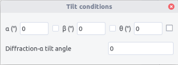

Kikuchi
kikuchi allows to determine orientation from a kikuchi pattern.
Introduction¶
Kikuchi lines result from inelastic scattering in a sufficiently thick crystal. Considering an electron beam entering the crystal, electron are scattered in different directions, but more likely in the forward direction. The electrons that are in Bragg conditions, i.e. forming an angle \pm \theta_B, with an atomic plane will eventually be diffracted. Their wave vectors \vec{k}_0, \vec{k}'_0 are distributed in two Kossel cones of aperture 90-\theta_B, around the plane normal, corresponding to the diffraction vectors \vec{g} or \vec{g}'=-\vec{g}. The diffracted beam with wave vectors \vec{k}_g and \vec{k}'_g, which are also distributed on the cones, intersect the observation screen and form lines, as \theta_B is small. Because the inelastic scattering is more intense in the forward direction, the diffracted beam \vec{k}_g gives rise to a line with a higher intensity, i.e. an excess line. On the contrary, \vec{k}'_g corresponds to a defected line.

The defected and excess lines are separated by the angle 2\theta_B which in the observation plane corresponds to a distance
where L is the camera length, i.e. the effective distance between the back focal plane of the objective lens and the observation screen, \lambda the electron wavelength, and d the interplanar distance related to the (h,k,l) plane.
Thus, the nature of the Kikuchi bands can be determined, knowing the calibration parameter L, the electron wavelength, which depends on the acceleration voltage and the crystal structure.
Indexing Kikuchi bands¶
(h,k,l) bands can be retrieved, knowing the crystal structure. It can be imported from the structure menu. This menu can be populated by adding structures in the structure.txt files following the template:
Name a(A) b(A) c(A) alpha beta gamma space group
The space group is defined in the space_group.txt file and with the scattering.txt file (see diffraction for more details).
Alternatively, the structure can be set by filling the a,b,c and \alpha, \beta, \gamma fields.
Calibration¶
The Kikuchi pattern needs to be calibrated on the microscope used but the calibration can be adjusted afterward.
The calibrations are set in the calibration.txt file following the scheme:
Microscope_name voltage camera length binning r.d
...
Orientation¶
Orientation of the crystal can be retrieved from the analysis of the band configuration in an approach similar to the one described in diffraction.
The figure below shows the relation between the Kikuchi bands that can be defined by their normal vector \vec{v}_{i} and their projection \vec{v}_{pi} in the observation plane normal to vector \vec{z}_P, i.e. the reverse of the electron beam direction 1.
From the projected vector, the normal band vector in the viewing screen coordinate system (x,y,z)_P can be deduced knowing the camera length L=\|\vec{OP}\|:

Considering N bands, the orientation can be defined by:
with
the g-vectors in the crystal coordinates and D^\ast is defined here, and:
As the above equation defines the crystal orientation, A should be a rotation matrix. The closest Euler rotation matrix R can be found with the approach proposed by Mackenzie using singular value decomposition:
The Euler angles are retrieved from the R matrix:
In diffraction, the g-vectors in crystal coordinates are determined step by step by calculating the angles between the vectors, and letting the user to choose. Kikuchi bands usually have higher indices so that it is more difficult to guess the right indices. Here we choose to compare the relative measured angles of g-vectors \theta_{ij}=\angle{(\vec{g}_i,\vec{g}_j)} with a lookup table compiling the angles \theta'_{ij}=\angle{((h_i,k_i,l_i),(h_j,k_j,l_j))}. A consistent set of g-vectors is obtained if all the angle differences \left|\theta_{ij}-\theta'_{ij}\right| is less than a tolerance angle \epsilon that can be chosen.
Interface¶
The interface is composed of a top bar menu, a plotting area to display Kikuchi pattern and a setting/results panel.

Procedure¶
-
Enter the crystal structure and space group.
-
Select the maximum indices for band identification.
-
Enter the microscope calibration.
-
Open a pattern.
-
Click on the pattern center and press
Add center. Position of the center appears in the box. -
To highlight the bands, the
brightnesscan be adjusted. -
Select a band by clicking three times. The first two points define the direction along one line. The third point should be on the second parallel line. Then, both the d-spacing and the projected g-vector can be retrieved. A better accuracy can be achieved if the direction is measured with two extreme points along the line. Zooming in the pattern can also be helpful.
-
Press
Add bands. The band number and the corresponding (projected) d-spacing dp (in px) appears in the Bands box. Bands can be removed by pressing theRemove bandbutton. -
Clear the points and view (if zoomed in) with the
Reset pointsandReset viewbuttons. -
Repeat the operation at least twice and no more than 6 times (2 to 6 bands to identify).
-
Choose a tolerance angle \epsilon less than 3 degrees. 1 by default.
-
Plot the bands to verify the measured bands.
-
Press the
Runbutton to display solutions in the Results box. If no solutions, remove the bands and try a more accurate point and click and/or increase the tolerance angle. -
By selecting the different sets of data and by clicking on the
Show bandsbutton, the theoretical bands are plotted in overlay. The results are shown according the scheme:
g: [h1,k1,l1],....,[hN,kN,lN]
Euler angles phi1, phi, phi2
dev_angle, dev_width
...
The dev_angle value corresponds to the mean misorientation:
The dev_width value corresponds to the mean deviation on the d spacing values (in percents).

These two values should be as minimum as possible. Usually a good fit can be obtained with \langle \Delta \theta \rangle of the order of 0.2 degrees and \langle \Delta d \rangle of the order of few percents.
Refining the results¶
Refining the results can be made from the Refine menu:
-
Manual rotations along x, y and z axes can be performed to judge the qualitative agreement between the pattern and the theoretical lines.
-
The calibration and acceleration voltage can also be adjusted. By clicking the
updatebutton, the solutions are re-calculated using the new sets of values. A better fit can be judged by inspecting how \langle \Delta \theta \rangle and \langle \Delta d \rangle are minimized. -
The updated Euler angles can be read at the bottom of the refine window.

Tilt conditions¶
By default the orientation determined corresponds to the situation of the holder at zero tilt the Euler angle being given in the (x,y,z)_P coordinate system. To retrieve the Euler angle at zero tilt from a tilted sample, the \alpha, \beta, \theta tilt angles and the angle \xi between the \alpha-tilt axis and the y-axis should be indicated as the Euler rotation matrix at zero tilt R_0 is deduced from the rotation matrix R_t obtained by the relation:
- Fill the filed in the Tilt conditions window accessed from the
Tool - Press
Runin the main window orUpdatein the Refine window to update the Euler angles.

-
Note that considering vectors pointing downward in the electron beam direction lead to similar results except the pattern is inverted. This inversion is taken into account here. ↩